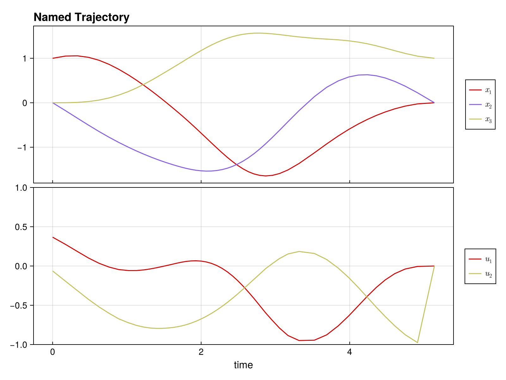

Complete Example: Time-Optimal Bilinear Control
This example demonstrates solving a time-optimal trajectory optimization problem with:
- Multiple control inputs with bounds
- Free time steps (variable Δt)
- Combined objective (control effort + minimum time)
using DirectTrajOpt
using NamedTrajectories
using LinearAlgebra
using CairoMakieProblem Setup
System: 3D oscillator with 2 control inputs
\[\dot{x} = (G_0 + u_1 G_1 + u_2 G_2) x\]
Goal: Drive from [1, 0, 0] to [0, 0, 1] minimizing ∫ ||u||² dt + w·T
Constraints:-1 ≤ u ≤ 1, 0.05 ≤ Δt ≤ 0.3
Define System Dynamics
G_drift = [
0.0 1.0 0.0;
-1.0 0.0 0.0;
0.0 0.0 -0.1
]
G_drives = [
[
1.0 0.0 0.0;
0.0 0.0 0.0;
0.0 0.0 0.0
],
[
0.0 0.0 0.0;
0.0 0.0 1.0;
0.0 1.0 0.0
],
]
G = u -> G_drift + sum(u .* G_drives)#2 (generic function with 1 method)Create Trajectory
N = 50
x_init = [1.0, 0.0, 0.0]
x_goal = [0.0, 0.0, 1.0]
x_guess = hcat([x_init + (x_goal - x_init) * (k/(N-1)) for k = 0:(N-1)]...)
traj = NamedTrajectory(
(x = x_guess, u = 0.1 * randn(2, N), Δt = fill(0.15, N));
timestep = :Δt,
controls = (:u, :Δt),
initial = (x = x_init,),
final = (x = x_goal,),
bounds = (u = 1.0, Δt = (0.05, 0.3)),
)N = 50, (x = 1:3, u = 4:5, → Δt = 6:6)Build and Solve Problem
integrator = BilinearIntegrator(G, :x, :u, traj)
obj = (QuadraticRegularizer(:u, traj, 1.0) + 0.5 * MinimumTimeObjective(traj, 1.0))
prob = DirectTrajOptProblem(traj, obj, integrator)
probDirectTrajOptProblem
Trajectory
Timesteps: 50
Duration: 7.35
Knot dim: 6
Variables: x (3), u (2), Δt (1)
Controls: u, Δt
Objective (2 terms)
1.0 * QuadraticRegularizer on :u (R = [1.0, 1.0], all)
0.5 * MinimumTimeObjective (D = 1.0)
Dynamics (1 integrators)
BilinearIntegrator: :x = exp(Δt G(:u)) :x (dim = 3)
Constraints (4 total: 2 equality, 2 bounds)
EqualityConstraint: "initial value of x"
EqualityConstraint: "final value of x"
BoundsConstraint: "bounds on u"
BoundsConstraint: "bounds on Δt"solve!(prob; max_iter = 50) initializing optimizer...
building evaluator: 1 integrators, 0 nonlinear constraints
dynamics constraints: 147, nonlinear constraints: 0
integrator 1 jacobian structure: 0.449s
jacobian structure: 1764 nonzeros (0.466s)
integrator 1 hessian structure: 0.015s
computing objective hessian structure (CompositeObjective)...
sub-objective 1 (QuadraticRegularizer): 0.219s
sub-objective 2 (MinimumTimeObjective): 0.005s
objective hessian structure: 0.268s
hessian structure: 2814 nonzeros (0.283s)
linear index maps built (0.003s)
evaluator ready (total: 0.863s)
evaluator created (1.423s)
NL constraint bounds extracted (0.019s)
NLP block data built (0.0s)
Ipopt optimizer configured (0.007s)
variables set (0.162s)
applying constraint: initial value of x
applying constraint: final value of x
applying constraint: bounds on u
applying constraint: bounds on Δt
linear constraints added: 4 (0.473s)
optimizer initialization complete (total: 2.111s)
******************************************************************************
This program contains Ipopt, a library for large-scale nonlinear optimization.
Ipopt is released as open source code under the Eclipse Public License (EPL).
For more information visit https://github.com/coin-or/Ipopt
******************************************************************************
This is Ipopt version 3.14.19, running with linear solver MUMPS 5.9.0.
Number of nonzeros in equality constraint Jacobian...: 1746
Number of nonzeros in inequality constraint Jacobian.: 0
Number of nonzeros in Lagrangian Hessian.............: 2748
Total number of variables............................: 294
variables with only lower bounds: 0
variables with lower and upper bounds: 150
variables with only upper bounds: 0
Total number of equality constraints.................: 147
Total number of inequality constraints...............: 0
inequality constraints with only lower bounds: 0
inequality constraints with lower and upper bounds: 0
inequality constraints with only upper bounds: 0
iter objective inf_pr inf_du lg(mu) ||d|| lg(rg) alpha_du alpha_pr ls
0 3.7396540e+00 1.51e-01 1.11e-01 0.0 0.00e+00 - 0.00e+00 0.00e+00 0
1 2.7534736e+00 1.34e-01 5.60e-01 -4.0 8.82e-01 - 1.44e-01 1.12e-01f 1
2 2.2513024e+00 1.24e-01 6.15e+00 -0.6 3.05e+00 - 2.86e-01 7.25e-02h 1
3 2.1466409e+00 1.11e-01 9.84e+00 -0.7 3.42e+00 0.0 2.51e-01 1.07e-01h 1
4 2.0562588e+00 1.03e-01 2.05e+02 -0.1 2.02e+00 1.3 1.00e+00 6.72e-02h 1
5 2.1339384e+00 1.02e-01 3.88e+02 1.7 1.38e+01 0.9 1.55e-01 1.09e-02f 1
6 2.3500178e+00 9.79e-02 1.78e+03 1.7 1.03e+01 - 6.69e-01 3.84e-02f 1
7 3.3437026e+00 8.71e-02 6.74e+03 1.7 2.97e+00 - 1.00e+00 2.28e-01h 1
8 3.5933627e+00 7.98e-02 6.97e+03 -4.0 8.26e+00 - 1.09e-01 7.50e-02h 1
9 3.8610599e+00 7.58e-02 8.45e+03 -4.0 1.57e+01 - 7.00e-02 4.54e-02h 1
iter objective inf_pr inf_du lg(mu) ||d|| lg(rg) alpha_du alpha_pr ls
10 4.0941904e+00 7.33e-02 1.40e+04 -4.0 1.19e+01 2.2 6.28e-02 3.23e-02h 1
11 4.2089842e+00 7.15e-02 1.67e+05 2.9 5.35e+00 3.5 1.65e-01 2.39e-02h 1
12 4.5026214e+00 7.02e-02 1.57e+05 2.3 4.87e+01 3.0 2.28e-02 1.78e-02f 1
13 4.6644153e+00 6.57e-02 1.52e+05 2.1 1.13e+01 2.6 4.72e-02 6.38e-02f 1
14 4.7068043e+00 6.26e-02 8.58e+04 2.9 4.86e+00 3.0 3.75e-01 4.81e-02f 1
15 4.8585094e+00 5.46e-02 6.75e+04 1.5 5.23e+00 - 1.79e-01 1.28e-01f 1
16 5.0312173e+00 5.74e-02 5.93e+04 -3.6 2.90e+00 - 1.34e-01 2.17e-01h 1
17 5.0088499e+00 5.29e-02 1.47e+04 2.4 5.14e-01 3.4 8.43e-01 7.74e-02f 1
18 5.3162671e+00 1.17e-01 1.40e+04 -3.7 6.71e-01 2.9 2.91e-02 9.37e-01h 1
19 5.2975932e+00 1.42e-01 1.37e+04 -3.7 9.46e+00 - 2.86e-02 3.10e-02h 2
iter objective inf_pr inf_du lg(mu) ||d|| lg(rg) alpha_du alpha_pr ls
20 5.1870672e+00 1.16e-01 6.37e+04 2.5 5.66e-01 4.3 9.82e-01 1.89e-01f 1
21 4.9102146e+00 2.28e-02 1.14e+04 1.5 2.69e-01 - 8.53e-01 1.00e+00f 1
22 4.8680188e+00 1.40e-04 2.69e+02 0.1 4.68e-02 - 9.77e-01 1.00e+00f 1
23 4.8573434e+00 8.75e-06 8.63e+00 -4.0 1.03e-02 - 9.70e-01 1.00e+00h 1
24 4.5300619e+00 4.57e-03 5.00e+00 -4.0 2.60e-01 - 4.24e-01 1.00e+00f 1
25 3.9712908e+00 1.24e-01 1.13e+00 -1.4 1.24e+00 - 7.45e-01 1.00e+00f 1
26 4.0506875e+00 1.70e-02 5.88e+02 -1.7 1.28e-01 3.8 9.79e-01 8.59e-01h 1
27 4.0525997e+00 1.59e-02 5.75e+02 -2.7 2.34e-02 4.2 1.00e+00 6.40e-02h 1
28 4.0679905e+00 8.42e-03 3.60e+02 -3.1 2.30e-02 3.7 1.00e+00 4.69e-01h 1
29 4.0686889e+00 8.08e-03 3.52e+02 -4.0 1.17e-02 4.2 1.00e+00 4.11e-02h 1
iter objective inf_pr inf_du lg(mu) ||d|| lg(rg) alpha_du alpha_pr ls
30 4.0852940e+00 5.01e-05 5.22e+01 -4.0 1.14e-02 3.7 1.00e+00 1.00e+00h 1
31 4.0852420e+00 4.54e-09 1.37e-01 -2.4 9.04e-05 3.2 1.00e+00 1.00e+00f 1
32 4.0851195e+00 1.40e-08 8.85e-02 -4.0 1.66e-04 2.7 1.00e+00 1.00e+00f 1
33 4.0846521e+00 1.16e-07 8.42e-02 -4.0 4.75e-04 2.2 1.00e+00 1.00e+00f 1
34 4.0832129e+00 1.11e-06 8.65e-02 -4.0 1.46e-03 1.8 1.00e+00 1.00e+00f 1
35 4.0789647e+00 9.79e-06 8.54e-02 -4.0 4.33e-03 1.3 1.00e+00 1.00e+00f 1
36 4.0669740e+00 7.90e-05 8.11e-02 -4.0 1.23e-02 0.8 1.00e+00 1.00e+00f 1
37 4.0365424e+00 5.24e-04 7.06e-02 -4.0 3.21e-02 0.3 1.00e+00 1.00e+00f 1
38 3.9764768e+00 2.21e-03 5.13e-02 -4.0 6.95e-02 -0.1 1.00e+00 1.00e+00h 1
39 3.9025368e+00 4.71e-03 3.91e-02 -4.0 1.61e-01 -0.6 1.00e+00 1.00e+00h 1
iter objective inf_pr inf_du lg(mu) ||d|| lg(rg) alpha_du alpha_pr ls
40 3.8733077e+00 5.10e-03 1.29e-01 -3.7 2.96e-01 -1.1 1.00e+00 4.90e-01h 1
41 3.8318699e+00 5.78e-03 1.12e-02 -4.0 4.12e-01 -1.6 3.07e-01 1.00e+00h 1
42 3.8265322e+00 1.94e-03 2.47e-03 -4.0 1.88e-01 -2.0 6.05e-01 1.00e+00h 1
43 3.8279352e+00 1.85e-03 2.10e-03 -4.0 4.12e-01 - 3.13e-01 1.32e-01h 3
44 3.8279412e+00 1.83e-03 3.34e-03 -4.0 1.45e+00 - 1.20e-01 1.08e-02h 6
45 3.8283608e+00 7.28e-03 8.59e-03 -4.0 2.66e-01 -2.5 1.00e+00 5.00e-01h 2
46 3.8286766e+00 7.03e-03 1.03e-02 -4.1 6.96e-01 - 5.31e-01 7.04e-02h 4
47 3.8289148e+00 5.94e-03 9.42e-03 -4.1 2.66e-01 -3.0 1.00e+00 2.50e-01h 3
48 3.8292605e+00 5.78e-03 1.07e-02 -4.0 7.35e-01 -3.5 7.11e-01 7.47e-02h 4
49 3.8294461e+00 5.79e-03 1.54e-02 -3.8 1.86e+00 - 9.06e-01 1.68e-02h 5
iter objective inf_pr inf_du lg(mu) ||d|| lg(rg) alpha_du alpha_pr ls
50 3.8252707e+00 4.78e-03 9.02e-03 -4.0 4.64e-01 - 6.51e-01 1.83e-01H 1
Number of Iterations....: 50
(scaled) (unscaled)
Objective...............: 3.8252706738436792e+00 3.8252706738436792e+00
Dual infeasibility......: 9.0156617945941868e-03 9.0156617945941868e-03
Constraint violation....: 4.7800395393408079e-03 4.7800395393408079e-03
Variable bound violation: 0.0000000000000000e+00 0.0000000000000000e+00
Complementarity.........: 4.5786449628798938e-04 4.5786449628798938e-04
Overall NLP error.......: 9.0156617945941868e-03 9.0156617945941868e-03
Number of objective function evaluations = 97
Number of objective gradient evaluations = 51
Number of equality constraint evaluations = 97
Number of inequality constraint evaluations = 0
Number of equality constraint Jacobian evaluations = 51
Number of inequality constraint Jacobian evaluations = 0
Number of Lagrangian Hessian evaluations = 50
Total seconds in IPOPT = 10.389
EXIT: Maximum Number of Iterations Exceeded.Visualize Solution
plot(prob.trajectory) # See NamedTrajectories.jl documentation for plotting options
Analyze Solution
x_sol = prob.trajectory.x
u_sol = prob.trajectory.u
Δt_sol = prob.trajectory.Δt
println("Solution found!")
println(" Total time: $(sum(Δt_sol)) seconds")
println(" Δt range: [$(minimum(Δt_sol)), $(maximum(Δt_sol))]")
println(" Max |u₁|: $(maximum(abs.(u_sol[1,:])))")
println(" Max |u₂|: $(maximum(abs.(u_sol[2,:])))")
println(" Final error: $(norm(x_sol[:,end] - x_goal))")Solution found!
Total time: 5.316329949304912 seconds
Δt range: [0.050264904777187716, 0.22772395416396068]
Max |u₁|: 0.9485881625059304
Max |u₂|: 0.975324217443569
Final error: 0.0Key Insights
Free time optimization: Variable Δt allows the optimizer to adjust trajectory speed, with shorter steps where control is needed and longer steps in smooth regions.
Control bounds: With time weight 0.5, controls don't fully saturate. Increase the weight to push toward bang-bang control.
Combined objectives: The + operator makes it easy to balance multiple goals.
Exercises
1. Bang-bang control: Set time weight to 5.0 - do controls saturate the bounds?
2. Fixed time: Remove Δt from controls and compare total time.
3. Add waypoint: Require passing through [0.5, 0, 0.5] at the midpoint:
constraint = NonlinearKnotPointConstraint(
x -> x - [0.5, 0, 0.5], :x, traj;
times=[div(N,2)], equality=true
)
prob = DirectTrajOptProblem(traj, obj, integrator; constraints=[constraint])4. Different goal: Try reaching [0, 1, 0] or [0.5, 0.5, 0.5]
5. Tighter bounds: Use bounds=(u = 0.5, Δt = (0.05, 0.3)) - how does time change?
This page was generated using Literate.jl.